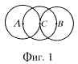

Беседа 2147 от 3877 · Беинса Дуно
Опорна точка в живота
„Добрата молитва "
Тема за идния път: „Добрите и слабите страни на сегашната култура."
Ще говоря върху опорната точка на живота.
За да се постигне каква и да е фигура, трябва да има каква и да е опорна точка, изходна точка. Това е по отношение на физическия живот, който представя външната страна на живота. Опорна точка има в съзнателния живот. Мнозина от вас, ако претърпявате крахове някой път, това се дължи на нямане на опорна точка. Опорна точка може да бъде домът. Опорна точка може да бъде религията. Опорна точка може да бъде националността. Опорна точка може да бъде богатството. Опорна точка може да бъде силата. Опорна точка може да бъде знанието. Това са опорни точки, на които човек може в даден случай да разчита. Не е лошо. Сега една опорна точка какво може да ви даде? Какво може да ви даде домът? Много може да ви даде, но не всичко. Какво може да и даде един народ? Много може да ви даде, но не всичко. Богатството може да ви даде много работи, но не всичко. Какво може да ви даде силата? Много работи, но не всичко.
Та казвам: Някой път вие идвате до едно вътрешно противоречие и не му знаете произхода. Богатият ще дойде в противоречие със сиромашията. Силният ще дойде в противоречие със своята слабост, с безсилието си. Някой път човек може да дойде в противоречие, като изгуби своята опорна точка в дома. Някой път се скараш с баща си, с майка си, усещаш се в едно непоносимо състояние и не знаеш как да се справиш с това. Как ще се справите тогава? Интересно е как ще се справите. Онази, научната, съзнателната страна е необходима при съграждането. Има един живот, при който човек строи нещо. Вие няма да останете в това положение, в което сега се намирате. Вие сте като пътниците. Сегашните ваши възгледи за живота ще се изменят. Много работи ще се изменят. Един ден вие ще мислите, че това, което сега сте мислили, е било много глупаво, че сте били много глупави. Тогава, когато мислите така, и тогава ще бъдете толкова глупави, колкото сега. Едно дете може да мисли, че като стане на 21 години, може да каже: „Едно време бях дете." Той си мисли каква работа може да свърши тогава. Но по отношение на много работи този, възрастният, е толкова слаб, колкото и детето. Разбира се, вие ще предпочетете да бъдете на 21 години, отколкото на 5 години. Кои са съображенията? Много може да се предполага. Има известни практически съображения. С малкото нищо не може да направите. С многото все таки ще направите нещо.
Та казвам: Всякога при опорните точки идва групировка на човешкото съзнание. Вие трябва да знаете кога, къде и как да групирате и направлявате вашето съзнание. Някой път вие мислите, че може много да направите, а при други условия със същото съзнание може нищо да не направите. Лятно време, при 30 градуса топлина, може много да направите, а пък зимно време, при 50 градуса студ, какво може да направите? Ще ви измръзнат ръцете, ще имате неразположение, ще се вкоченят ръцете ви. Лятно време ръкавиците не са ви потребни, те са лукс, но зимно време са потребни, ще ги търсите. Това, което е непотребно лятно време, зимно време става потребно. Но понеже вашият ум сега е ангажиран с известни идеи, вашето съзнание е така ангажирано, както съзнанието на някоя пчела, която влиза в някой цвят. Всичкото й съзнание е в този цвят. За нищо друго не мисли. Иска да събере колкото мед има и да си излезе. Какво ще бъде времето, че ще стане промяна с времето, т тази пчела е безразлично. Тя иска да изкара от този цвят някои блага. Е, добре, от сегашното положение на живота вие какво искате да извадите? Вашето положение сега прилича на една пчела в цвят, искате всичко да извадите.
Колко мед може да извадите? За пример гадатели много често могат да предскажат бъдещето на другите, но даже онези, които предсказват много точно, не могат да предскажат своето бъдеще. Гадателите предсказват толкова точно, колкото астрономите изчисляват точното разстояние от Слънцето до Земята. Точно изчисляват и едни казват, че това разстояние е 92 милиона мили, а други казват, че е 93 милиона. Каква точност има тук. При един милион мили разлика? Гадателят казва: „От тебе ще излезе голям поет." Какъв голям поет? И в какво седи това, че е написал няколко стихотворения? И какво е свършил? И след това казва: „Един гадател ми предсказа, че ще направя нещо поетично." Понеже всички сте поети. Има известна област, през която човек минава. Поезията е във времето, когато цветята цъфтят и пъпките на листата се развиват. Тогава изобщо има поезия. Та опишете това състояние. Кои са опорните точки в поезията? Какви правила спазва поетът? Като вземе едно съотношение, например „планина висока, долина дълбока". Направете сега от тези изрази поетично изречение. Колкото планината е висока, толкова и долината ще бъде дълбока. Някой ако ви говори това, вие ще се усмихнете. Може да кажете: „Защо при високата планина се е наместила дълбоката долина?" Защото от високата планина слиза водата, а пък долината, понеже е жадна, се нуждае от тази вода. Поетично може да опишете това. Коя ще бъде най-хубавата форма? Но под красивите планини седят красиви долини. И още какво може да се каже? Умът на човека планина ли е или долина? (Планина.) Така е. А долината какво е? (Чувство.) По какво може да се познае една опорна точка? Често се употребяват лостовете. Имате някой предмет, някой камък, не може да го вдигнете. Той има по-голяма сила, отколкото вашата сила, по-тежък е в дадения случай. Вие туряте онази опорна точка и с този лост повдигате камъка и го търкаляте. Опорната точка е точката, на която може да наместите лоста и да си послужите. Имате една голяма мъчнотия, не може да я дигнете. Това е камък. Трябва да има една опорна точка, за да турите лоста и да премахнете този камък. За пример коя е опорната точка на парите? На богатството коя е опорната точка? Опорната точка на честността каква е? Или на добродетелта каква е опорната точка. Или на разумния живот коя е опорната точка? Коя е опорната точка на любовта? Любовта и тя си има опорна точка. Всяко нещо си има опорна точка и ние изхождаме от сегашния живот.
По отношение на абсолютното като едно цяло може да изведем изречението, че на абсолютното центърът е навсякъде и никъде. Така беше формулата. Вечността се представя като една сфера, на която центърът е навсякъде и никъде. Значи много центрове има, много опорни точки има (фиг. 1).

Когато дойде до личния живот на човека, всякога ще трябва да се справяш и да работиш върху най-силните страни в себе си. Не се спирайте върху слабите си страни. Всякога се стремете да работите върху най-силните си страни. Вземете идеята за Бога. Тази идея, колкото и да се е говорило за нея, не е ясна. За пример ние казваме, че трябва да вярваме в Бога. Защо? Ако казвам, че трябва да вярвам на въздуха или на жилището, защото са необходимост, или трябва да вярвам на земята, понеже тя е една необходимост, не може да не вярваш. На земята израстват растения. Земята изглежда неорганизирана и ние мислим, че седим по-високо, отколкото земята, и мислим, че сме най-умните същества. Сега откъде иде тази идея у човека? Има известни неща на земята, горната част на земята. Това, което ние считаме, че не е организирано, това са останки на известни същества, които са живели. Така и в човешкия живот има известни наслоявания. Човек трябва да махне тия наслоявания.
Опорната точка в дадения случай ние трябва да считаме, че е човешкият ум, сърце и човешката воля. Да допуснем, че някой път вие се обезсърчите. Обезсърчени сте. На какво се дължи известно ваше обезсърчение? Вие казвате: „Аз нищо няма да постигна в живота си." Онези, които постигат, и онези, които не постигат, по какво се отличават? И умният, и глупавият умират. По какво се отличават? Единия го погребват с чест, а другия - просто. Каква разлика има? Че единият умира като праведен, а другият умира като глупав. Мислите ли, че природата ще ги посрещне и двамата еднакво. Бащата има глупав син и друг син - умен. Бащата ги посреща и двамата, но какво ще бъде отношението на бащата към двамата? Бащата, като посрещне глупавия, няма да му каже нищо. Ще каже: „Глупав е." А като погледне умния син, бащата е доволен, че синът му е умен. Питам, когато вие се обезсърчите, умен ли сте. Някой, като се обезсърчи, мисли, че е учен. Глупавите хора се мислят за много умни, а пък умните хора се мислят за много глупави. Някой, като поумнее, почне да се мисли за много глупав, а който оглупее, почва да се мисли за много умен. Нали сте били в класовете? В 1, 2, 3, 4, 5 клас. Толкова поумнявате, че разрешавате почти всички въпроси. Но като влезете в университета, почвате да казвате: „Едно време бях по-умен, сега почнах да оглупявам." В четвърти клас мислех по-здраво. Това е сега на лична база. От какво произтича обезсърчението на човека? Обезсърчението всякога се дължи, когато някой чужд елемент, нещо чуждо се е вмъкнало в съзнанието. Това не е твое. И когато се намести, всякога чувствуваш едно обезсърчение. Например влиза малка прашинка в окото, но така може да възпали окото, че искаш да свършиш работа и казваш: „Тази работа няма да я свърша." Аз имах един такъв случай с един наш хазяин в Юндола. Той беше неразположен към нас, но един ден в чарка влиза една малка тресчица в окото му. Подуло се окото му и ще идва в София да му направят операция, да му извадят тресчицата. Аз казах: Ще направим един опит. Седнете на стона. Хващам горната част на клепача, обръщам клепача и изваждам тази малка тресчица. Казвам: Ще намажеш малко с дървено масло. На втория ден окото оздравя. Оттам насетне човекът се измени, беше на наше разположение. Каквото искахме, даваше. Като му извадих тази малка прашинка от окото, всички бяха разположени към нас, на нашите услуги. Малка причина в окото. Трябва да бъдете умни в малките случаи. Малките прашинки, които влизат, да имате един начин за изваждането им. Какво ви коства да хванете горната част на клепача и да извадите дъсчицата? Или какво ви коства на вас, че ви влезе една прашинка в ума, че не ви обичат? Виждал съм в някои къщи, в сина или в дъщерята е влязла идеята, че бащата или майката не ги обича. И казва: „Към онзи брат или сестра бащата е разположен, но спрямо мене - не." Той гледа мрачно. Каквото и да му разправят е недоволен, понеже тази идея седи в него. Тази идея си има психически произход. Често и вие страдате така. Влязла е някаква идея в ума ти или казваш: „Забравил ме е Господ." Ти си учил, но твоят ум е бил разделен. Нямал си опорна точка. Много работи са отнемали силата на твоя ум. Когато е пропукано човешкото съзнание, човек не може да учи.
Ще ви приведа един пример. Един от видните професори в Европа преподавал много добре лекциите си. Всичките студенти били доволни. Един ден забелязали, че мислите на този професор не са така свързани. Това ставало, когато една студентка влизала в университета и тогава мислите ставали несвързани, а когато я нямало, професорът говорил много добре. Когато присъствувала тя, неговата мисъл ставала несвързана. Студентите казали: „Ще турим някой да я изпъди. Тази студентка има някаква магическа сила." Питам: Има ли някакво съотношение между тази студентка и лекциите на професора? Може би е имала някаква изключителна черта и професорът, като разсъждавал за нейната форма, за някои философски работи, разделяло се е неговото съзнание. Тогава се е изгубил предметът, понеже имал два предмета в ума си. И предметът за студентката е по-силен, отколкото предметът на лекцията.
Все таки във вашият клас ще влезе някоя студентка. Виновата ли е тя, че е влязла? Не. Тя иска да научи нещо, но че умът, съзнанието на този знаменит професор може да се раздвои, това е друг въпрос. Често във вашия ум навлизат посторонни мисли, които пропукват съзнанието и вие губите своята мисъл. Мога да ви приведа много мисли, но понеже времето е късо, няма да го направя. Едно от правилата е: Не допускайте чужди предмети в съзнанието си. Никога, по никой начин. Съзнанието на човека, това е светая светих. Там трябва на влезе всичко възвишено и благородно. Бъдете строги в това. Трябва да има там един вестибюл и там да ги спирате. Един учен човек допуснал в себе си една чужда идея, че трябва да стане богат. Ако допусне тази идея, той и ще изгуби всичките възможности. Понеже най-богатите хора не са най-учените хора. Богатството е едно условие за учения човек. Но и учението е условие за богатия. Богатството е едно условие, то е един резултат от човешката дейност. Човек е създал богатството. Човек е създал парите и той сега се влияе от парите. Ние мислим, че тези пари всичко могат да направят за нас. Много малко могат да направят за нас. Ти като умираш, парите не могат да те спасят. За да се избавиш от смъртта, само толкоз се изисква - да си обърнеш горния клепач. Много хора умират, по причина че имат голямо разстройство между трите центъра. Хората умират, когато си разстройват отношенията между ума, сърцето и волята. А щом се наруши това, тогава човек рискува да изгуби живота си. Пълното здраве на човека зависи от кооперирането на тези три центъра. Когато умът, сърцето и волята действуват в една и съща посока, помагат си. Тогава човек може да успява. Често пъти вие казвате някои неща, които не са ваши чувства. Тогава губите една трета от вашата сила. Ще отслабне вашата воля и загубвате две трети, тогава остава вашия ум. Какво може да направите с една трета? Умът ви трябва да има една опорна точка. После сърцето ви трябва да има опорна точка и волята ви трябва да има опорна точка. Всички едновременно трябва да действуват в една и съща посока за това, което вие желаете. И вашето желание трябва да бъде строго определено. Това, което искате да постигнете, трябва да заслужава онези жертви, които ще направите.
Струва ли си цял живот човек да работи, само за да купи един костюм, дрехи? 30 - 40 години да работи за това? Струва ли си 30 - 40 години човек да работи и да спечели пари, да направи една хубава къща и да умре или с тези пари да купи хубава цигулка и да умре? И да остави цигулката. От всички ваши желания, които имате, някои са съществени, но някои не са съществени. Има чужди желания, оставете ги във вестибюла отвън, а пък съществените желания, съществените мисли ги оставете вътре в съзнанието. Когато Мойсей казва: „Не пожелай", той подразбира всички онези чужди работи и те освен че няма да допринесат, но ще раздвоят съзнанието ви. Да допуснем, че вие сте един студент и искате да следвате. Аз ви казвам, че след 10 години ще стане такова голямо земетресение, че всичкият този град ще бъде пометен. Тази идея може да се загнезди така в съзнанието ви и може да кажете: „Защо да уча аз? Ще се свърши светът. Няма защо да учим." Това са лъжливи работи. Ще стане земетресение, така е. Ще се смъкнат всички къщи, и това може да стане. Може и да не стане, това са чужди идеи. Кажи си: „Понеже аз съм дошъл на земята, аз зная, че ще свърша нещо. Няма какво да ми разправят. От мене ще стане точно това, за което съм пратен." Какво може да стане от една ябълчена семка? - Една ябълка. Какво може да стане от една крушева семка? - Една круша. Какво може да стане от един трън? - Трън.
Какво има да се обезсърчавате? Това, което е вложено във вас, ще стане. И ако вие сте верни на него, то ще стане. Ако не сте верни, то само ще закъсняват работите, нищо повече. Тази година ще се отложи, идущата година ще се отложи и може би след 15 - 20 години ще стане. От това отлагане у вас се образува известно недоволство. Ще станете на 45 години, на 65 години, на 85 години, на 120 години и ще ви подпишат паспорта, ще си дигнете всичкия багаж от земята и ще си заминете.
Според мен ето в какво седи същността на нещата. Представете си, че ви поканват на едно угощение, но само да помиришете яденето и да си излезете, да си излезете само с възпоминанието на мириса. Или само да видите цветята, с които е украсен салонът, и да си отидете от вечерята. Кое е същественото в една вечеря? -Да ядете. Кое е същественото в знанието? - Знанието трябва да се превърне в сила. Силата в какво трябва да се превърне? В действие. А в действието трябва да има някакъв резултат. Докато човешкият ум, сърце и воля работят за човешката душа и за човешкия дух, това е нормалното състояние. Две неща трябва да седят в ума ви. Каквото и верую да имате, сега същественото кое е? Може да имате едно верую. Винаги вашият дух, вашата душа да ви бъдат като идеал, за който умът ви, сърцето ви и волята ви трябва да работят. Някой казва: „Аз ще работя за повдигането на моя дух." Ти не може да работиш за повдигането на твоя дух и на твоята душа. Въпросът не е там. Човешкият ум, сърце и воля могат да имат значение, когато работят за човешката душа и човешкия дух. Това е важното за тебе. Ти ще опиташ благата. Всеки един от вас трябва да работи за своя дух и за своята душа. Това е един идеал, който трябва да имате, и тогава и знанието и всички тези условия, са спомагателни вече.
„Отче наш "
27 лекция от Учителя, държана на 20 април 1934 г., София, Изгрев.